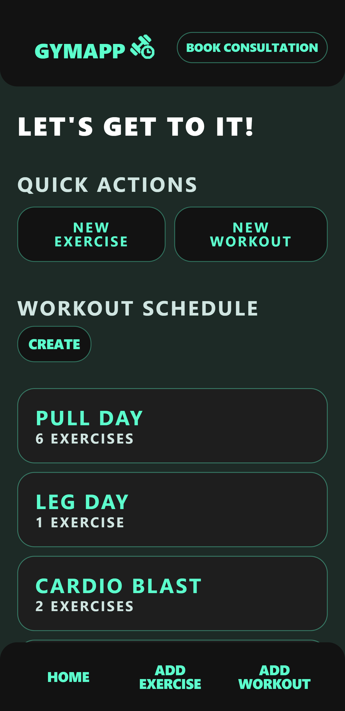
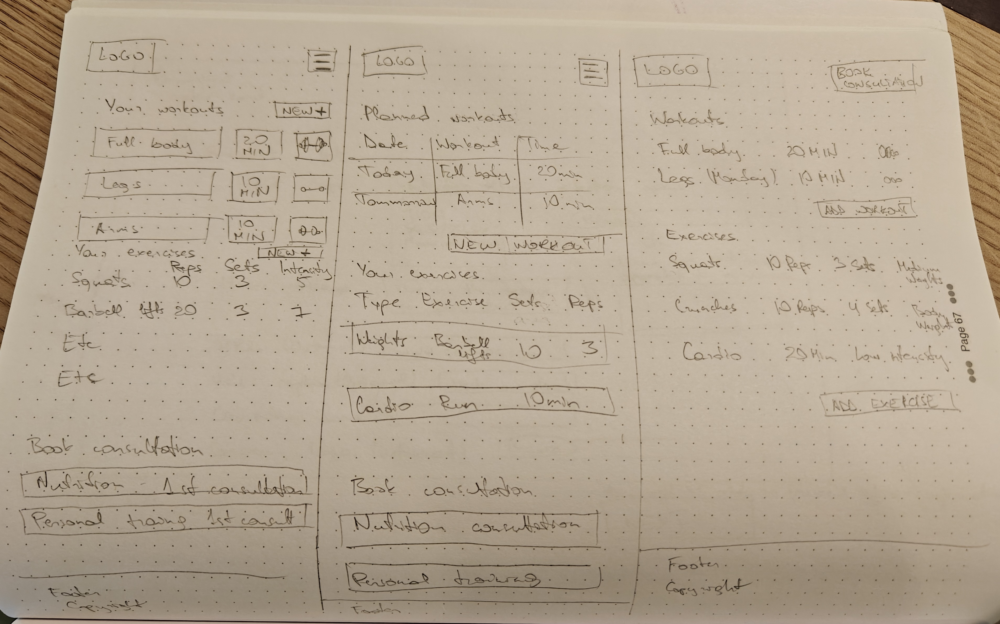
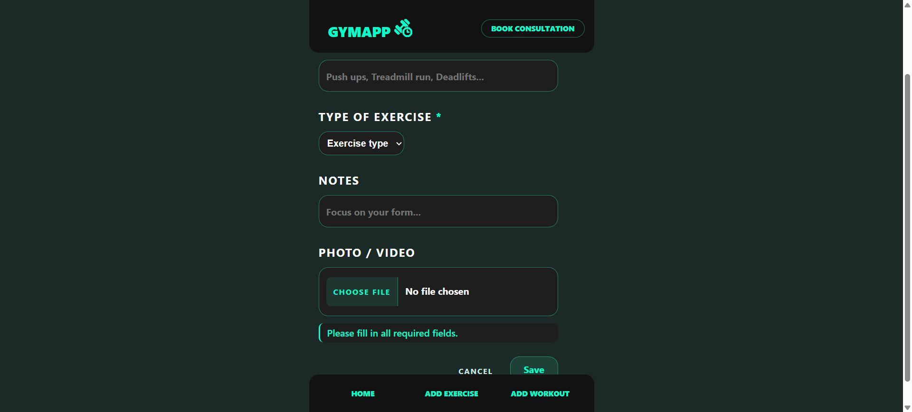
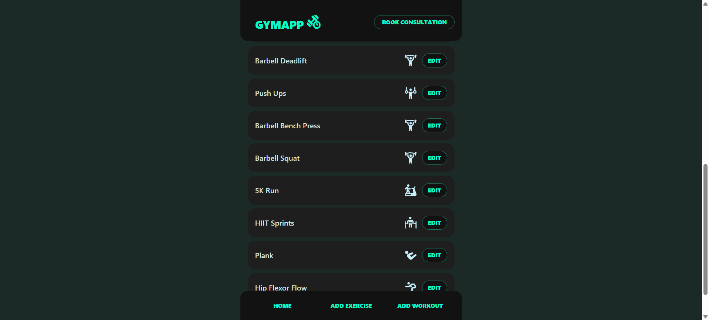

Gym Workout Planner
An accessibility-first workout management application with persistent local storage, built without a backend.
- HTML5
- CSS3
- JavaScript
- IndexedDB
- Accessibility
Overview
Create, manage and track exercises across six categories: calisthenics, cardio, core, weights, HIIT and mobility, with all data stored persistently in the browser via IndexedDB. Accessibility was the primary design constraint, not an afterthought: full keyboard navigation, ARIA live regions for dynamic feedback and WCAG 2.1 AAA contrast (7:1) throughout.

The Problem
Most gym tracking apps require a subscription, an account or a native install. The goal was a simple, private, offline-capable browser tool, one that persists data meaningfully without a server and remains fully accessible to users on assistive technology.
Design
Accessibility shaped every decision before any visual work began, with the goal of meeting WCAG 2.1 AAA throughout rather than retrofitting compliance at the end.
- Targeted WCAG 2.1 AAA (7:1 contrast), which ruled out interaction patterns that work with a mouse but fail for keyboard users: no drag-and-drop reordering, no hover-only controls and no custom dropdown components
- Data model designed before any code was written, with exercises and routines as separate entities in order to allow one exercise to appear across multiple routines without data duplication
- Colour choices driven by contrast headroom: teal primary sits above 7:1 on both white and off-white backgrounds, accommodating the easy read mode which lightens the background
- Typography uses
emunits throughout so the easy read font-size increase scales the whole interface proportionally

The Solution
Storage: IndexedDB over localStorage
- Data storage
- localStorage: Requires JSON serialise/deserialise on every read and write
- IndexedDB: Stores structured objects directly, no serialisation overhead
- Size limit
- localStorage: Capped at ~5MB per origin
- IndexedDB: No practical size limit for personal workout volumes
The database exposes a clean Promise-based API (get, getAll, add, update, delete), the UI never touches IndexedDB directly.
Input validation and sanitisation
String.trim()on all text fields, removing accidental whitespace before any writeNumber.isFinite()+ positive-number check on sets, reps and weight; invalid entries are rejected with an inline error, never silently coercedaria-invalid="true"+aria-describedbyon each failing field, works across all assistive technologies, not just screen readers
Screen reader support
role="status"live region announces add, edit and delete confirmations without moving focus- Focus managed programmatically after list mutations: moves to the new item on add, to the preceding item on delete, or to the add button if the list is now empty

Development Process
Built in three phases to keep the accessibility work continuous rather than retrofitted.
- Data layer first: the IndexedDB wrapper was built and tested in isolation from any UI in order to give the interface layer a stable, predictable API to build against; this prevented UI work from being blocked by storage bugs mid-build
- Keyboard testing at every milestone rather than reserved for the end: tab order verified manually after each new component, with focus management added as each list interaction was built
- Testing: axe DevTools automated scan, manual keyboard flow, NVDA with Chrome screen reader; several focus order issues were identified during screen reader testing and corrected before the final build
WCAG success criteria targeted
- 1.3.1 Info and Relationships: explicit
label forassociations, semantic list markup, correct heading hierarchy - 2.1.1 Keyboard: every mouse action reachable by keyboard; no keyboard traps
- 4.1.3 Status Messages:
role="status"live region for add/edit/delete confirmations - 1.4.6 Contrast Enhanced: all text at 7:1 or above

Outcome and Reflection
All six categories working with full CRUD, data persists across sessions, passes keyboard and screen reader testing. The accessibility groundwork cost time in the early phases but removed a much larger retrofit later.
The main thing I would change is the IndexedDB abstraction layer, it grew function by function rather than being designed as a class. There is repeated error-handling logic across the get, add and update paths that a class-based wrapper with a shared error handler would consolidate.